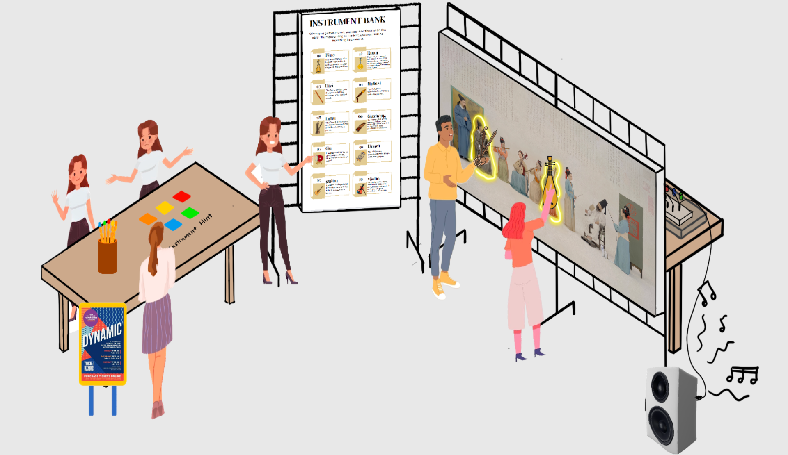
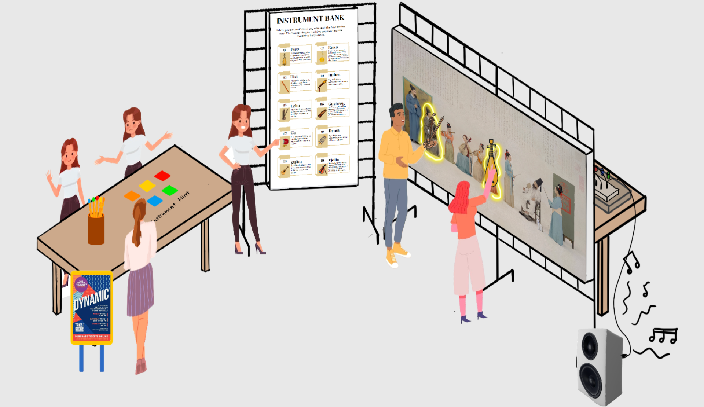

Melodic Ink
Interactive Art Installation with Techlogical System
Video Description
Three students are interacting with the melodic ink installation
For my IAT222 final project, inspired by Joo Youn Paek's innovative approach to merging technology and design, our team created an interactive art piece that combined visual, auditory, and physical elements.
01
Conceptualization
The project began with brainstorming sessions, where we aimed to create an artwork that not only engages viewers visually but also invites them to interact with it. We decided on incorporating circuits into a drawing, which would trigger sounds and lights when interacted with. The idea was to use technology to bring static art to life, much like Paek's work.

02
Design and Prototyping
We started by sketching the initial design. The drawing depicted several people playing instruments, with the circuit embedded in the artwork. We used Arduino boards, wires, LEDs, and reed switch to make the circuits, making sure they integrated seamlessly into the design.
Participants need to place the chosen model on the painting. Correct placement triggers the instrument's music and lights up parts of the painting. Combining multiple instruments results in a harmonious musical piece. Therefore, there will be a lot of combination, with a full orchestra playing if five people participate simultaneously and make the placement right.
 

03
Iteration and Development
We used Processing, a Java-based language, to create the interface for playing music. I also did the Arduino coding to control the physical installation, including the LED lights. The Arduino code read data from the circuits and transferred it to Processing, enabling communication between the two systems. Sensors triggered corresponding sounds and LEDs when the instrument model was brought close to the drawing. This required careful coding and calibration to synchronize responses.

04
Final Product
The final project offered an engaging, multi-sensory experience through seamless technology integration. Using Processing for the music interface and Arduino for physical controls enabled smooth communication between software and hardware. This project showcased my ability to creatively integrate technology, highlighting my proficiency in programming and electronic components. It strengthened my skills in software development and hardware interfacing, proving my capability to handle complex projects.